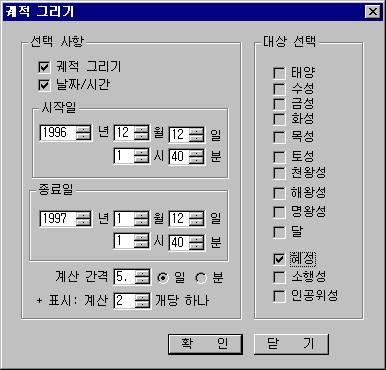

오늘 바라본 하늘은 어제의 그 하늘이 아니다. 하늘에 있는 모든 것들은 무한한 생명력을 가지고 끊임없이 활동하고 있기 때문이다. 그러나 우리는 그 움직임 속에서 어떤 규칙을 발견하게 되고 움직임을 추적할 수 있는 것이다. 궤적 그리기에서는 수성, 금성 등을 비롯한 행성들과 달, 혜성, 소행성, 인공위성 등의 궤도가 날짜와 시간에 따라 변화하는 모습을 살펴볼 수 있어 한 눈에 대상의 움직임을 예측할 수 있다. 또한 궤적의 날짜를 보기 좋게 옮겨서 표시할 수 있는 기능도 갖추고 있다.
자, 그럼 이제부터 궤적 그리기의 실제로 들어가 보자.
|
 |
| 궤적 그리기 윈도 |
궤적에 표시된 날짜는 마우스로 드래그하여 위치를 옮길 수 있다. (성도에 표시되는 대상 참조)
별바라기 홈 최초 작성: 2026년 11월 01일, 최종 변경: 2026년 11월 01일